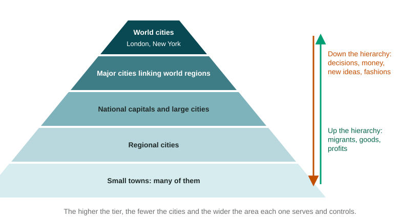

Globalization does not spread evenly. It runs through cities, and especially through a small group of very connected cities that steer money, information and decisions for the whole world.
What makes a world city
A world city, also called a global city, is a city whose firms and organizations make decisions that reach far beyond its own country. What counts is function, not size. A world city usually has:
- headquarters of large companies that operate in many countries;
- stock exchanges, major banks and insurers;
- firms that sell expert help to other firms: law, accounting, consulting and advertising;
- media companies, top universities and international bodies (the United Nations in New York, many UN agencies in Geneva);
- a large airport with direct flights to the other world cities, and fast data links.
The Globalization and World Cities research network (GaWC), based at Loughborough University in England, ranks cities by the offices of large finance, law, consulting, accounting and advertising firms. In its 2024 study of 785 cities, London and New York were the only two in its top class; 49 cities made its top "Alpha" group (GaWC, October 2024). Rankings like this change every few years, so date any you use.
World cities and megacities are not the same
A megacity is defined by population; a world city by global functions. Some cities are both: Tokyo is a megacity and also hosts many large firms and a major stock exchange. Others are one without the other. Dhaka in Bangladesh is among the largest cities on Earth by population (UN DESA, 2025), yet few global firms run their world business from it. Zurich in Switzerland has about 1.5 million people in its urban area (Swiss Federal Statistical Office, 2025), yet it is home to major banks and insurers. When an exam asks about world cities, read the legend: a map may mark megacities and world cities with different symbols.
The urban hierarchy

The urban hierarchy is a ranking of cities by the size of the area they serve and the reach of their decisions. Each level has fewer, larger and more powerful cities than the one below.
| Level | What it does | Example |
|---|---|---|
| World city | Steers global finance, media and business | London, New York |
| Major city linking a world region | Hosts regional offices for a continent or a large region | Singapore for much of Southeast Asia; Johannesburg for southern Africa |
| National city | Leads one country's business or government | A national capital such as Nairobi, Kenya |
| Regional city | Serves part of a country | Kisumu, a regional center in western Kenya |
| Small town | Serves nearby farms and villages | A market town |
The hierarchy helps explain hierarchical diffusion. A new fashion, phone or financial product often appears first in world cities, then in national cities, and only later in small towns, skipping the countryside between.
A network, not a ladder alone
World cities are often tied more closely to each other than to the countryside around them. Flights, undersea data cables and money link London and New York so tightly that people speak of "NY-LON". Time-space compression makes this possible: a deal can be signed between Singapore and São Paulo in minutes. Over time, more world cities have grown outside Europe and North America, including Tokyo, Hong Kong, Shanghai, Singapore and Dubai.
Effects across scales
At the global scale, world cities drive globalization: a decision at a London bank can move money into a factory in Viet Nam or out of it. At the local scale, inside the world city itself, global money brings high-paid jobs but also very high housing costs, and many low-paid workers clean the offices, cook the food and drive the buses. The gap between rich and poor neighborhoods is often wide. A strong answer says which scale it means.